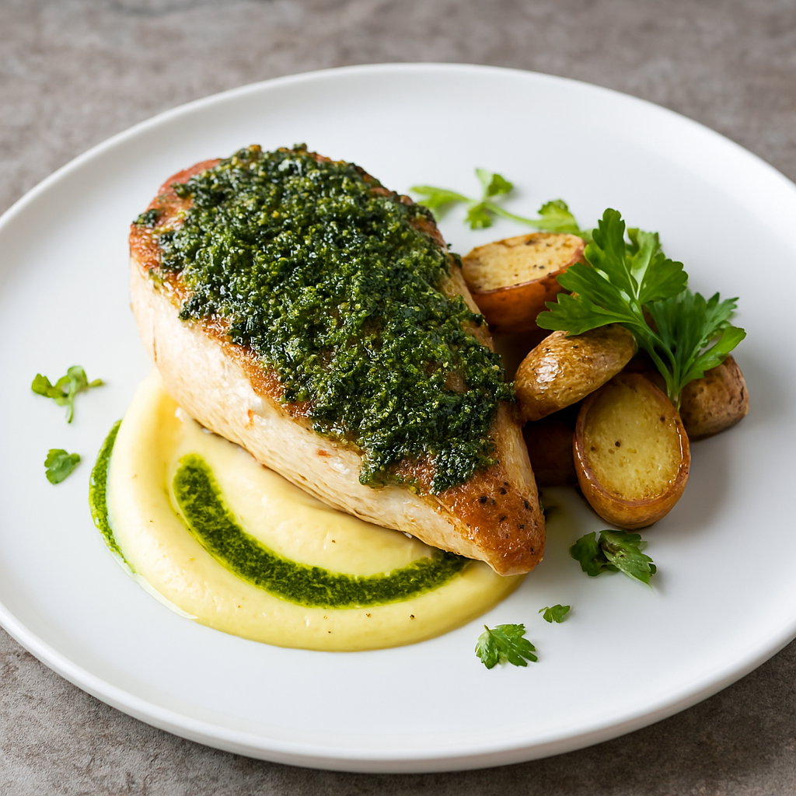

Sous Vide Chicken With Truffle Veloute

Ingredients:
- 4 chicken breasts, skin on
- Salt and pepper
- 1 onion, diced
- 2 tbsp truffle butter
- 1 bay leaf, thyme sprigs
- 1 tbsp olive oil
- 1 cup chicken stock
- 1 tbsp flour
- 1 tbsp butter
- Baby vegetables (turnips, asparagus, onions)
Instructions:
- Season chicken, add truffle butter and herbs, vacuum seal.
- Sous vide at 63°C (145°F) for 1 hour.
- Sear skin-side down until crisp.
- Make velouté: melt butter, whisk in flour, add stock, simmer until thick.
- Plate chicken with velouté and vegetables.